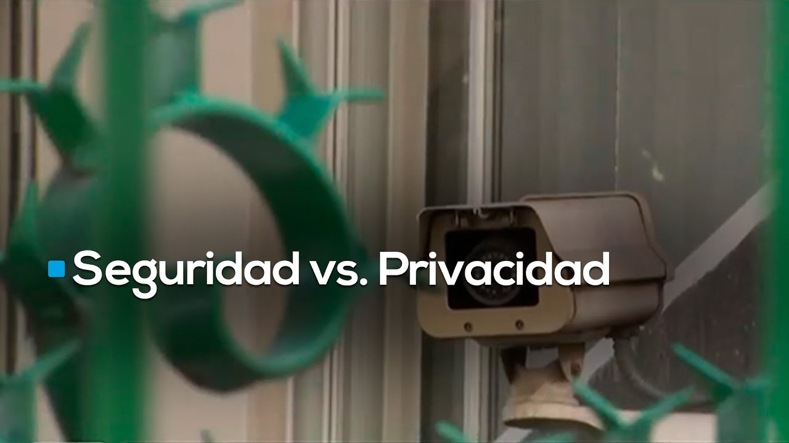
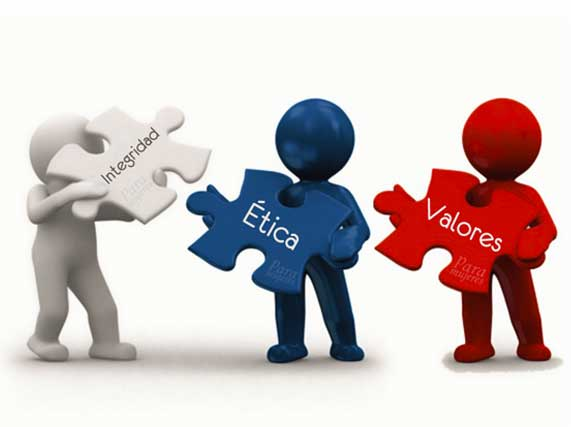
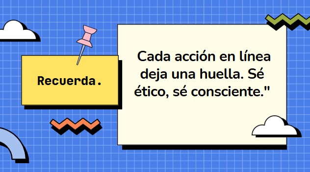

Autores:
Edin Eliceo Isaac Moran Chen, emoranc6@miumg.edu.gt
Estefani Haydeé Balcarcel Alonzo, ebalcarcela1@miumg.edu.gt
Carlos Antonio Juarez Camey, cjuarezc7@miumg.edu.gt
Profesor: Luis Mariano Moreira Flores
Curso: Ética y valores
Marco de trabajo para la toma de decisiones éticas en ciberseguridad
Validación del Framework Ético, y tú, ¿Qué harías?
Se aplicó el framework al caso estudiado: Monitorización del comportamiento de empleados en una empresa multinacional.

Una empresa multinacional está implementando un sistema avanzado de monitorización
que registra todas las actividades de los empleados en los sistemas informáticos, incluyendo
correos electrónicos, navegación web, uso de aplicaciones y patrones de tipeo. El objetivo
declarado es prevenir fugas de información y detectar comportamientos que puedan indicar
amenazas internas. Sin embargo, el sistema recopila datos que podrían considerarse
invasivos de la privacidad, y los empleados no han sido plenamente informados sobre el
alcance de la vigilancia.
Aplicación:
Dilema: Se implementa un sistema avanzado de monitorización que registra todas las actividades de los empleados sin informarles plenamente.
Impacto: Riesgo de invasión a la privacidad y posible desconfianza entre empleados y empresa.
Decisión: Se propone balancear la seguridad con respeto a la privacidad y transparencia.
Resultado: Se establecen políticas claras, transparencia en la monitorización y salvaguardas para proteger los derechos.
Evaluación del impacto:
Mayor claridad y confianza entre empleados y dirección.
Reducción de posibles abusos del sistema de vigilancia.
Equilibrio entre seguridad empresarial y derechos personales.
Preguntas guía sobre el caso de monitorización
La monitorización puede ser justificable si es proporcional, necesaria y transparente, y siempre respetando la privacidad y dignidad de los empleados.
¿Y tú qué harías?
Debe existir una comunicación clara y completa, informando a los empleados sobre qué datos se recogen, con qué propósito y cómo se protegerá su privacidad.
¿Y tú qué harías?
Se debe buscar un balance mediante políticas éticas, límites claros, auditorías independientes y opciones para que los empleados puedan expresar inquietudes.
¿Y tú qué harías?
Las auditorías independientes aseguran que la monitorización cumple con estándares éticos y legales, manteniendo la confianza y transparencia.
¿Y tú qué harías?
Los empleados deben contar con canales confidenciales y seguros para expresar inquietudes sin temor a represalias.
¿Y tú qué harías?
Reflexión Final
"La ética no es una teoría, es una práctica que construye confianza en el mundo digital."


🎯 La ética guía nuestras decisiones... y define nuestro impacto.
🙏 Muchas gracias por su atención y por esta clase, Profesor Luis Mariano Moreira Flores.
¡Sus enseñanzas sobre ética nos inspiran a tomar decisiones responsables!